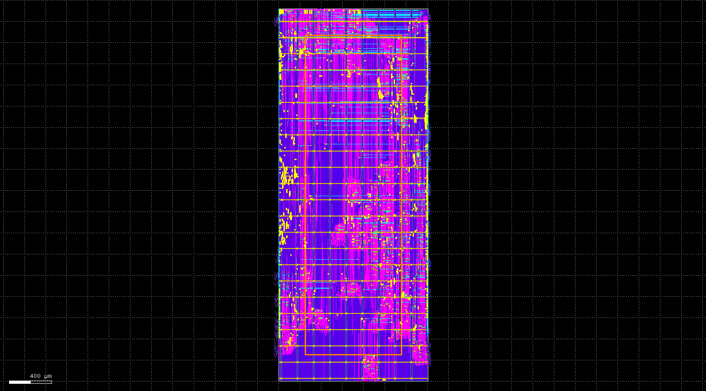

Featured Project: 8x8 Systolic Matrix Multiplier
Multiplier Features
This is a 8x8, 16 bit systolic matrix multiplier. This multiplier takes ~200ns for matrix calcuations, as opposed to ~5ms for a normal matrix calculator. Using individual processing elements, it massive improves on matrix calculation speed by pipelining the data through each processing element, instead of re-fetching from memory, drastically improving throughput.

This is the synthesis as given by the Synopsys Design Compiler GUI.
Layout
Using OpenLane2, two versions of this matrix multiplier was designed. The two versions differ in how the multiply accumulate units are designed. The structural version uses a radix-2 kogge stone adder with a wallace tree multiplier implementing Booth's algorithm, while the behavioral design uses what the synthesizer infers.

This is the layout of the structural version of the design given by KLayout.
Projects
Below are other projects that I have worked on.
32 Bit MIPS CPU
[Code]
A 32-bit 5-stage pipelined MIPS processor is built in Verilog, improving performance but requiring hazard-handling modules (forwarding, flushing, stalling) to manage pipeline challenges. Using OpenLane2, this CPU was laid out with space and power efficiency in mind. Future work includes optimized PDN, clock gating, and different voltage domains.
Configurable Logic Block Verification Tools
[Code]
Part of a group term project for a digital systems verification class. Developed a python based framework implementing the PODEM algorithm to verify functionality and ensure correct operation of an FPGA's configurable logic block.
Digital Circuit Design
[Github]
An assortment of digital circuit designs done in Cadence Virtuoso. Performed for my digital IC class. Manually laid out circuits by drawing the various metal, n-well, p-well, and poly layers and then performed SPICE simulation to ensure expected functionality given voltage levels. Lab reports with graphs of the SPICE simulation using Spectre are also included.
Verilog Designs
[Code]
All of the digital systems designed using Verilog on Quartus for the DE10-Lite FPGA for my digital systems II class. All designs include a testbench which verify the correct functionality of each system, as well as a lab report summarizing our lab activities. Projects gradually increase in difficulty culminating in a 8x8 matrix multiplier for lab 6, of which serves as the foundation for my Systolic Matrix Multiplication project through the invaluable guidance of Professor Venkatesh Akella.
RISC-V Assembly Programs
[Code]
A collection of RISC-V assembly programs made for my computer architecture class. Each lab includes the raw file for code, and a lab report showcasing the results of the code. Lab 2 features an assembly based vector-matrix multiplication project and lab 3 showcases a division program capable of producing the quotient and remainder. This class taught me how a RISC-V system works and served as the bedrock to my knowledge when working on the 32 bit MIPS CPU project.
OrCAD Simulations
[Projects]
Various circuits and simulations designed using Cadence OrCAD and PSpice, then physically built upon a breadboard and tested for real functionality through the use of wave generators, oscilloscopes, and spectrum analyzers. Each lab includes a lab report that details the calculations for designing each of the circuits, simulated results and real-life results, and the finalized circuit in both OrCAD and physically on the breadboard.
Current and Future Projects
Below are some projects that I am working on or plan to begin working on.
FPGA Gameboy Emulation
[Code]
Development of a Z80-like CPU capable of running Gameboy games on a DE10-Nano. Further development of a graphics and audio processing engine, VGA and USB interface for external display and controller connectivity. Eventual goal is to make contribution to MiSTER-Core project, allowing for more retro system hardware to be synthesized on an FPGA.
Video Processing System
[Code]
This is my senior design project. The goal is to design and implement a real-time hardware video processing system on a DE1-SoC FPGA board using Verilog and embedded C, then perform video processing effects like filters and measuring performance metrics like FPS.